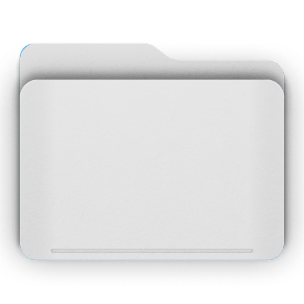

<!--
    Articles - an empty folder app. It only has app.json + this file.
    Replace this with your own content, or add "styles" / "scripts" to
    app.json when it needs them (see apps/README.md and apps/_starter).
-->
<div class="app-empty">
    
    <strong>Articles is empty</strong>
    <span>Add your own content in apps/articles/index.html</span>
</div>
